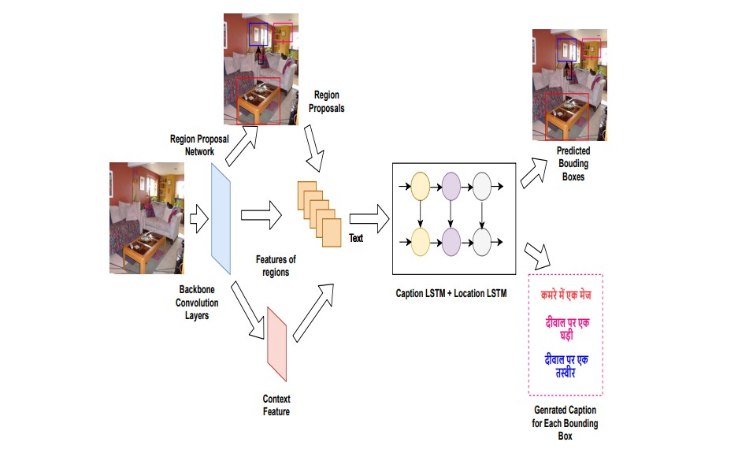

I am a first-year Master's student at the University of Utah, where I have the opportunity to work with Ziad Al-Halah. Prior to joining Utah, I gained valuable experience as an ML engineer at Bobble AI, where I was a member of the Conversational Intelligence Team, focusing on natural language processing. I completed my undergraduate studies at the University of Delhi, during which time I engaged in a diverse range of research projects, including developing a Hindi dense image captioner and working on long-sequence legal text processing. I am interested in the vast real-world application and immense research potential of Deep Learning.
I enjoy talking to people and building (hopefully useful) things together. :)
If you want to discuss research/collaborate, feel free to send me an email!
I have a broad interest in Deep Learning. I'm majorly interested in Vision-and-Language and Continual Learning problems.
Publication(s)

A Deep Learning based Dense Image Captioning Framework in Hindi
Santosh Kumar Mishra, Harshit, Sriparna Saha, Pushpak Bhattacharyya
We proposed a dense image captioning model to describe different segments of an image by generating more than one caption in the Hindi language. This is the first attempt on Hindi dense image captioning. We created our own dataset by translating Visual Genome dataset from English to Hindi.
Projects
Automatic neural image captioning: I used an encoder-decoder framework, where an input image is encoded into an intermediate representation of the information in the image, and then decoded into a descriptive text sequence. For encoder, I used ImageNet pre-trained Xception architecture and for decoder I used LSTMs nets with GloVe word embedding for word representation. Code is here.
Predicting programming language of StackOverflow Questions using NLP: Stack Overflow relies on users to properly tag the programming language of a question. In this project I proposed a deep learning classifier to predict the programming language of questions posted in Stack Overflow using Natural Language Processing (NLP) and Machine Learning (ML). The classifier achieves an accuracy of 82.34% in predicting the 16 most popular programming languages by combining features from the title and body of the question. Code is here.
Stock price trend prediction (code here): I used LSTMs to forecast the pattern of three Indian bank' stock prices, IndusInd, ICICI, and HDFC bank. I was able to achieve an RMSE of 44.30, 14.83, and 35.79 on the unseen test data of IndusInd, ICICI, and HDFC bank, respectively. Although stock prices are affected by a lot of factors that cannot be predicted like economic conditions, political situation, natural calamities etc. but still the model shows a robust performance and can be used on any type of share dataset to predict the trend.
Sentiment analysis of movie reviews:
I used LSTMs to predict the Positive/Negative sentiments of IMDB movie reviews.
Code is here.
I borrowed this template from Jon Barron's website.
{kind=link}